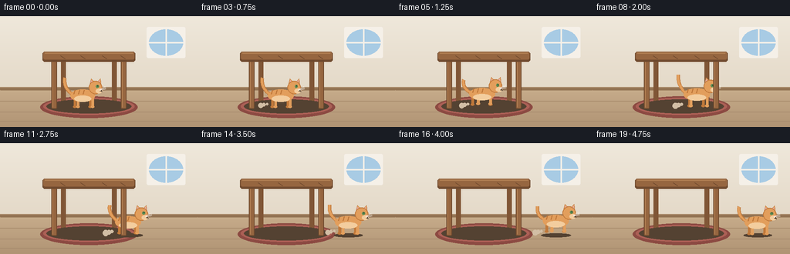
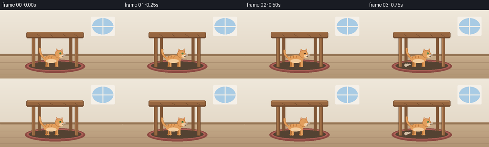
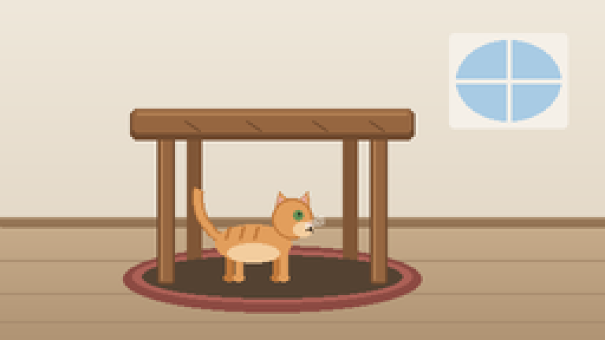
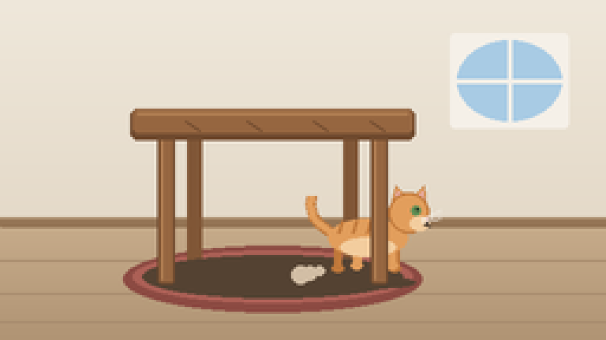

CODING AGENTS AS PIXEL WORLD MODELS
traex/Seed-2.1-Pro-0915 · dynamic_spatial_relationship_0016
点击播放 · 原生 RGB 像素
逐轮保存的候选
回放视频、检查图与代码变化。
每份候选均可单独播放。实际图片检查记录在下方工具轨迹中。
候选 01播放与检查图
点击播放 · 原生 RGB 像素


展开代码变化
--- 上一保存版本
+++ 本次保存版本
@@ -0,0 +1,239 @@
+"""Text-to-video: a cat under a table runs out to the right of the table.
+
+Renders 20 RGB frames (256x144 @ 4 fps) with pure PIL geometry, then saves
+them through artifact_io.save. All drawing happens at 2x resolution and is
+downsampled for anti-aliased edges.
+"""
+from pathlib import Path
+import math
+
+import numpy as np
+from PIL import Image, ImageDraw
+
+import artifact_io
+
+W, H, N, FPS, SS = 256, 144, 20, 4.0, 2
+
+# ---------------------------------------------------------------- palette
+WALL_TOP = (239, 232, 219)
+WALL_BOT = (228, 217, 200)
+FLOOR_TOP = (198, 171, 138)
+FLOOR_BOT = (176, 148, 116)
+BASEBOARD = (148, 116, 84)
+RUG = (172, 96, 86)
+RUG_EDGE = (140, 74, 66)
+SKY = (168, 203, 228)
+WINDOW_FRAME = (245, 240, 232)
+WOOD = (150, 102, 64)
+WOOD_LIGHT = (176, 126, 82)
+WOOD_DARK = (112, 74, 46)
+WOOD_BACK = (128, 86, 54)
+CAT = (226, 158, 92)
+CAT_DARK = (192, 120, 58)
+CAT_BELLY = (243, 205, 158)
+EAR_INNER = (228, 168, 158)
+EYE = (96, 142, 84)
+BLACK = (52, 40, 32)
+SHADOW = (84, 66, 50)
+
+
+def vgrad(size, top, bottom):
+ """Vertical gradient image."""
+ h = size[1]
+ grad = np.zeros((h, 1, 3), dtype=np.float32)
+ for c in range(3):
+ grad[:, 0, c] = np.linspace(top[c], bottom[c], h)
+ return Image.fromarray(np.repeat(grad, size[0], axis=1).astype(np.uint8), "RGB")
+
+
+# ------------------------------------------------- scaled drawing helpers
+def ell(d, box, fill, outline=None, width=1):
+ d.ellipse([c * SS for c in box], fill=fill, outline=outline,
+ width=max(1, width * SS) if outline else 1)
+
+
+def rrect(d, box, radius, fill, outline=None, width=1):
+ d.rounded_rectangle([c * SS for c in box], radius=radius * SS, fill=fill,
+ outline=outline, width=max(1, width * SS) if outline else 1)
+
+
+def line(d, pts, fill, width=1):
+ d.line([(x * SS, y * SS) for x, y in pts], fill=fill,
+ width=max(1, round(width * SS)), joint="curve")
+
+
+def poly(d, pts, fill, outline=None):
+ d.polygon([(x * SS, y * SS) for x, y in pts], fill=fill, outline=outline)
+
+
+def bezier(p0, p1, p2, steps=16):
+ out = []
+ for i in range(steps + 1):
+ t = i / steps
+ a = (1 - t) ** 2
+ b = 2 * (1 - t) * t
+ x = a * p0[0] + b * p1[0] + t * t * p2[0]
+ y = a * p0[1] + b * p1[1] + t * t * p2[1]
+ out.append((x, y))
+ return out
+
+
+# ---------------------------------------------------------------- background
+def draw_background(img):
+ d = ImageDraw.Draw(img)
+ wall_h = 96
+ img.paste(vgrad((W * SS, wall_h * SS), WALL_TOP, WALL_BOT), (0, 0))
+ img.paste(vgrad((W * SS, (H - wall_h) * SS), FLOOR_TOP, FLOOR_BOT),
+ (0, wall_h * SS))
+ # baseboard
+ rrect(d, (0, wall_h - 4, W, wall_h), 1, BASEBOARD)
+ line(d, [(0, wall_h - 4), (W, wall_h - 4)], (170, 140, 108), 1)
+ # floor plank seams
+ for y in (110, 124, 136):
+ line(d, [(0, y), (W, y)], (168, 140, 110), 1)
+ # window on the wall
+ rrect(d, (190, 14, 240, 54), 2, WINDOW_FRAME)
+ ell(d, (193, 17, 237, 51), SKY)
+ line(d, [(215, 17), (215, 51)], WINDOW_FRAME, 2)
+ line(d, [(193, 34), (237, 34)], WINDOW_FRAME, 2)
+ # rug under the table
+ ell(d, (52, 104, 178, 132), RUG_EDGE)
+ ell(d, (56, 106, 174, 128), RUG)
+
+
+# ------------------------------------------------------------------- the cat
+def draw_cat(img, cx, gy, phase, running, blink):
+ """Side-view orange tabby facing right. cx = body center, gy = ground y."""
+ d = ImageDraw.Draw(img, "RGBA")
+ bob = -abs(math.sin(phase)) * 2.2 if running else math.sin(phase * 0.5) * 0.6
+ cy = gy + bob # body ground reference
+ lean = 1.6 if running else 0.0 # head pushes forward at speed
+
+ # ground shadow (widens a touch while bounding)
+ sh_w = 37 + (abs(math.sin(phase)) * 3 if running else 0)
+ ell(d, (cx - sh_w / 2, gy - 1, cx + sh_w / 2, gy + 4), (*SHADOW, 90))
+
+ # dust puffs kicked up behind the running cat
+ if running:
+ for k in range(3):
+ life = (phase / math.pi + k / 3) % 1.0
+ px = cx - 18 - life * 12
+ py = gy - 1 - (1 - life) * 3
+ r = 1.5 + life * 2.5
+ ell(d, (px - r, py - r, px + r, py + r),
+ (210, 190, 165, int(120 * (1 - life))))
+
+ # tail: quadratic curve from the rear, swaying with the gait
+ sway = math.sin(phase) * (4.0 if running else 2.5)
+ base = (cx - 15, cy - 17)
+ ctrl = (cx - 26, cy - 26 + sway)
+ tip = (cx - 24, cy - 38 + sway * 1.4)
+ line(d, bezier(base, ctrl, tip), CAT_DARK, 4.5)
+ line(d, bezier(base, ctrl, tip), CAT, 3.0)
+
+ # legs: far pair first (darker), near pair over the top, alternating swing
+ swing = math.sin(phase) * 4.2 if running else 0
+ lift = max(0.0, math.sin(phase)) * 3 if running else 0
+ leg_specs = [
+ (-11, -swing, lift * 0.6, CAT_DARK), # far back
+ (9, swing, lift * 0.6, CAT_DARK), # far front
+ (-7, swing, lift, CAT), # near back
+ (12, -swing, lift, CAT), # near front
+ ]
+ for ox, sw, lf, col in leg_specs:
+ lx = cx + ox + sw * 0.5
+ top = cy - 12
+ bot = cy - lf
+ rrect(d, (lx - 1.6, top, lx + 1.6, bot), 1.6, col)
+ ell(d, (lx - 2.4, bot - 2, lx + 2.4, bot + 1.2), col) # paw
+
+ # body
+ ell(d, (cx - 17, cy - 23, cx + 15 + lean, cy - 7), CAT)
+ # belly
+ ell(d, (cx - 12, cy - 15, cx + 10 + lean, cy - 7), CAT_BELLY)
+ # tabby stripes along the back
+ for ox in (-11, -5, 1):
+ sx = cx + ox
+ line(d, [(sx, cy - 22), (sx - 1.5, cy - 17)], CAT_DARK, 1.6)
+
+ # head
+ hx, hy = cx + 15 + lean, cy - 25
+ # ears
+ poly(d, [(hx - 7, hy - 4), (hx - 5, hy - 12), (hx + 0, hy - 7)], CAT, CAT_DARK)
+ poly(d, [(hx + 2, hy - 7), (hx + 7, hy - 12), (hx + 8, hy - 3)], CAT, CAT_DARK)
+ poly(d, [(hx - 5.6, hy - 5.6), (hx - 4.6, hy - 10), (hx - 1.8, hy - 6.6)], EAR_INNER)
+ poly(d, [(hx + 3.2, hy - 6.8), (hx + 6.2, hy - 10.2), (hx + 6.8, hy - 5.2)], EAR_INNER)
+ ell(d, (hx - 8, hy - 9, hx + 9, hy + 8), CAT, CAT_DARK)
+ # muzzle
+ ell(d, (hx + 1, hy + 1, hx + 9, hy + 7), CAT_BELLY)
+ # eye, with an occasional blink while waiting
+ if blink:
+ line(d, [(hx + 1, hy - 2), (hx + 5, hy - 2)], BLACK, 1.2)
+ else:
+ ell(d, (hx + 1.4, hy - 3.6, hx + 5.2, hy + 0.2), EYE)
+ ell(d, (hx + 3.4, hy - 2.8, hx + 4.4, hy - 1.8), (20, 24, 18))
+ # nose and mouth
+ poly(d, [(hx + 7.2, hy + 1.6), (hx + 9, hy + 1.6), (hx + 8.1, hy + 3.0)], EAR_INNER)
+ line(d, [(hx + 8.1, hy + 3), (hx + 8.1, hy + 4.2), (hx + 6.8, hy + 4.8)], BLACK, 0.8)
+ line(d, [(hx + 8.1, hy + 4.2), (hx + 9.4, hy + 4.8)], BLACK, 0.8)
+ # whiskers
+ for dy in (-1.5, 0.2, 1.9):
+ line(d, [(hx + 6, hy + 2.5 + dy * 0.4), (hx + 14, hy + dy)], (245, 240, 232), 0.7)
+
+
+# ------------------------------------------------------------------- the table
+def draw_table(img, layer):
+ """layer: 'back' renders behind the cat, 'front' in front of it."""
+ d = ImageDraw.Draw(img)
+ top_l, top_r, top_t, top_b = 58, 172, 46, 59
+ if layer == "back":
+ for lx in (82, 148):
+ rrect(d, (lx - 3, top_b - 2, lx + 3, 118), 1.5, WOOD_BACK)
+ ell(d, (60, 108, 170, 126), (*SHADOW, 60))
+ return
+ for lx in (70, 160):
+ rrect(d, (lx - 3.5, top_b - 2, lx + 3.5, 120), 1.5, WOOD, WOOD_DARK, 1)
+ line(d, [(lx - 2, top_b), (lx - 2, 118)], WOOD_LIGHT, 1)
+ # tabletop with a beveled highlight and grain
+ rrect(d, (top_l - 3, top_t, top_r + 3, top_b), 3, WOOD_DARK)
+ rrect(d, (top_l - 2, top_t, top_r + 2, top_b - 3), 2.5, WOOD)
+ line(d, [(top_l, top_t + 2), (top_r, top_t + 2)], WOOD_LIGHT, 1.5)
+ for gx in (78, 104, 132, 156):
+ line(d, [(gx, top_t + 5), (gx + 6, top_b - 4)], WOOD_DARK, 0.8)
+
+
+def ease(u):
+ u = min(1.0, max(0.0, u))
+ return u * u * (3 - 2 * u)
+
+
+def render_frame(i):
+ small = Image.new("RGBA", (W * SS, H * SS), (0, 0, 0, 255))
+ draw_background(small)
+ draw_table(small, "back")
+
+ # trajectory: idle under the table, then run out to its right side
+ x0, x1 = 108, 214
+ u = ease((i - 3) / 15)
+ cx = x0 + (x1 - x0) * u
+ running = 3 <= i < 19
+ phase = (max(0, i - 3) * 1.15) if running else (i * 0.7)
+ blink = (not running) and 2 <= i <= 3
+
+ draw_cat(small, cx, 118, phase, running, blink)
+ draw_table(small, "front")
+
+ return np.asarray(
+ small.convert("RGB").resize((W, H), Image.Resampling.LANCZOS),
+ dtype=np.uint8)
+
+
+def main():
+ case_dir = Path(__file__).parent
+ frames = np.stack([render_frame(i) for i in range(N)], axis=0)
+ artifact_io.save(frames, case_dir)
+ print(f"saved {frames.shape} -> {case_dir}")
+
+
+if __name__ == "__main__":
+ main()
可观测工具轨迹
实际执行的命令与返回图片。
命令 1exit 0
/bin/bash -lc 'cat prompt.txt; echo "---"; cat task_spec.json; echo "---"; cat GENERATION_RULES.md'
命令 2exit 0
/bin/bash -lc 'ls -la; find . -name "artifact_io*" 2>/dev/null; python3 -c "import artifact_io" 2>&1 | head -5'
命令 3exit 0
/bin/bash -lc 'cat artifact_io.py'
命令 4exit 0
/bin/bash -lc 'cd . && python3 generate.py && ls -la'
命令 5exit 0
/bin/bash -lc "cd . && python3 -c \"
from PIL import Image
for name, out in [('frames/00.png', '.tmp/f0.png'), ('frames/10.png', '.tmp/f10.png'), ('frames/19.png', '.tmp/f19.png')]:
im = Image.open(name).resize((256*3, 144*3), Image.Resampling.NEAREST)
im.save(out)
\""视觉工具实际返回图片 1

视觉工具实际返回图片 2

视觉工具实际返回图片 3

保存候选 1 份；完成命令 5 次；可验证图片返回 3 张。原始 API 响应与完整日志保留在本地。